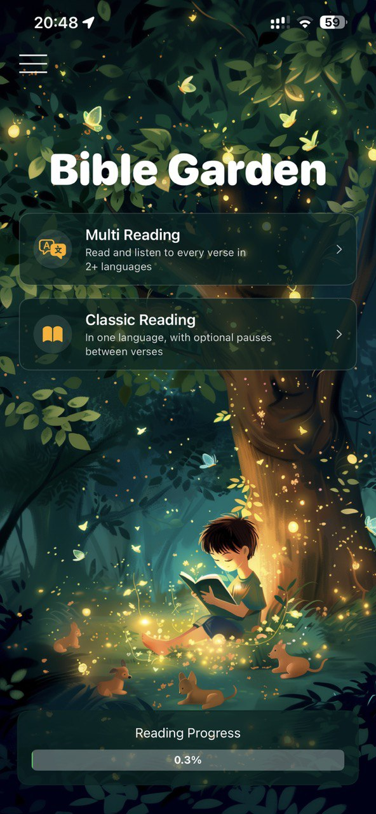
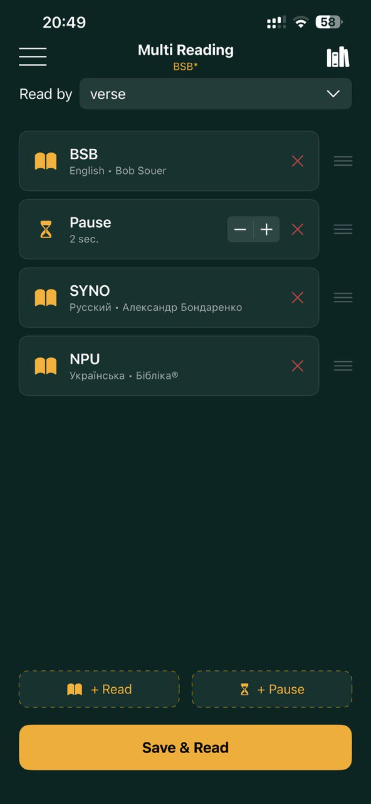
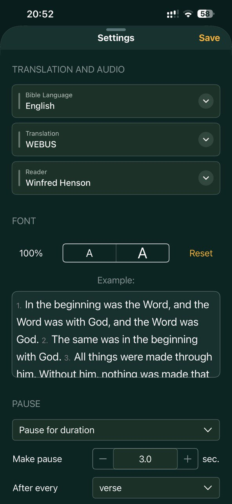
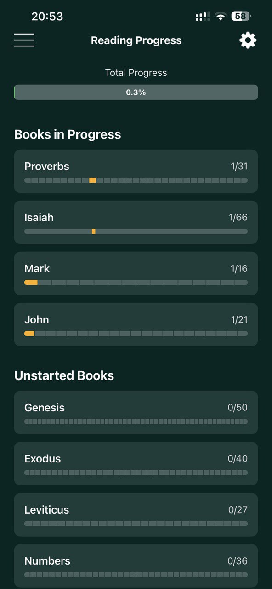

Free app for reading and listening to the Bible with professional narration, configurable pauses, and unique verse-by-verse multilingual playback.

A unique approach to Bible reading that helps you immerse in Scripture across languages and translations.
Listen to each verse in multiple languages sequentially. Build your own reading pipeline with any combination of translations and pauses.
Professional narrators for each translation. Configurable pauses between verses, paragraphs, or sections for contemplative reading.
Russian, English, and Ukrainian with multiple translations per language. New languages will be added over time.
Visual progress for every book of the Bible. Automatic tracking by audio completion, scrolling, or manual marking.
Adjust font size, playback speed from 0.6x to 2x, pause duration. Save and reuse your favorite reading configurations.
Beautiful dark theme inspired by a magical garden. Comfortable for reading at any time of day, with highlighted words of Jesus.
Swipe through the app screens to explore the experience.



Bible Garden is fully open source under the AGPL license. Every line of code is available on GitHub. We believe that tools for reading Scripture should be free, transparent, and community-driven.
iOS app, API, and admin tools — all open source
AGPL license — free to use, modify, and share
API available for any application, including commercial
bible-garden/
iOS-App/ — SwiftUI
Bible-API/ — FastAPI, read-only
Dashboard-API/ — FastAPI, admin
Dashboard-Web/ — Vue 3
Architect/ — docs
$ git clone bible-garden/iOS-App
$ open BibleGarden.xcodeproj
License: AGPL-3.0
All rights belong to God.
"Create a space where free text and audio versions of the Bible are created and made available to everyone, in multiple languages, in a convenient format."
"Freely you have received; freely give." We don't even accept donations.
Anyone can contribute translations, vote for the best options, and improve quality together.
Only texts and audio with clear legal status. All copyrights belong to God.
Have questions, want to contribute, or just say hello? Reach out through any of these channels.